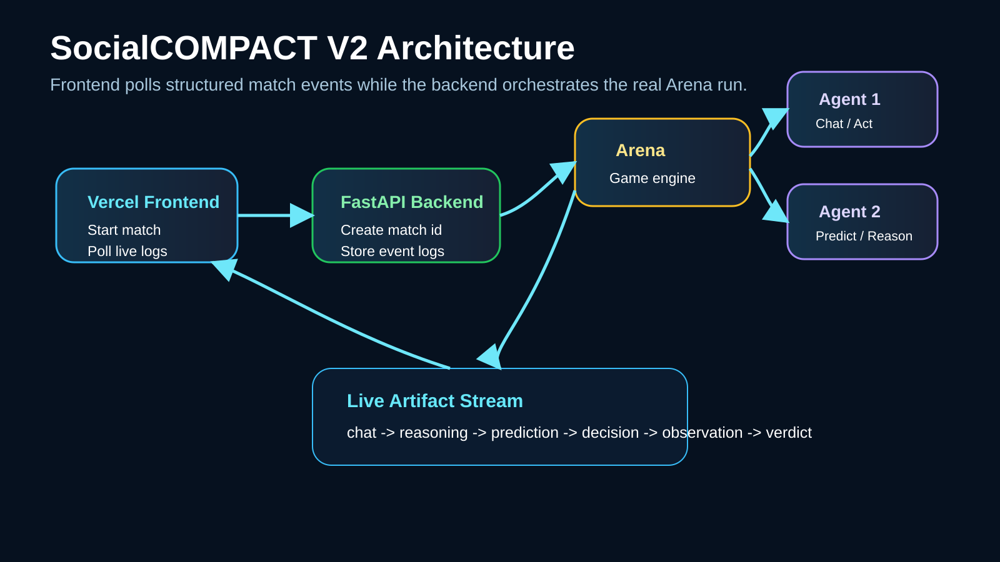

CS183 Project Explainer
Can two AI agents play a social survival game live?
SocialCOMPACT turns multi-agent negotiation, prediction, and action into a deployed web experience.
What if a web app could show two AI agents negotiating, predicting, and acting in a social survival game, live?
Project overview
Vercel frontend, FastAPI backend, Render Arena, and two Agent services.
Input -> Output
Input: player names and service URLs.
Output: a visible Survivor match with live Agent artifacts and a final result.

SocialCOMPACT is a CS183 deployment project for multi-agent game evaluation.
Version comparison
V1 made the demo work. V2 made the demo understandable.
Version 1
MIEC submission
- Commit f22f70c
- First working web flow
- Polling logs introduced
- Still felt opaque during long runs
Version 2
Public live demo
- Vercel + Render deployment
- Responsive health checks
- Background Arena orchestration
- Live Agent mini theater
Version 1 exposed the first working web flow. Version 2 redesigns the run around asynchronous orchestration and live artifacts.
Manim technical animation
The core change is an event pipeline.
Manim clip: V1 blocking run -> V2 live event stream
The backend returns a match id immediately, runs the Arena in the background, stores structured events, and the frontend polls them.
Evidence and metrics
What improved?
Running feedback
V1: queued or running state
V2: chat, reasoning, prediction, decision
Deployment
V1: local-oriented flow
V2: Vercel + Render public services
Cold starts
V1: could appear stalled
V2: health checks and clearer retry guidance
Understanding
V1: final result oriented
V2: process visible through logs
The evidence is visible in the UI: Agent artifacts are no longer hidden behind a generic loading state.
Deployed demo
The match becomes a mini theater.
Xavier: I am watching your ammo and moving first.
Ronda: Then speak quickly. I am not giving you room.
Users can now watch the Agent conversation, inspect predictions, and verify whether the result came from the real Arena.
Reflection
More playable, more observable, still operationally complex.
WorkedLive Agent state is visible.
LimitationFree Render services can cold start.
NextAdd tie handling, replay storage, and preflight checks.
The trade-off is operational complexity: four deployed services must stay healthy.